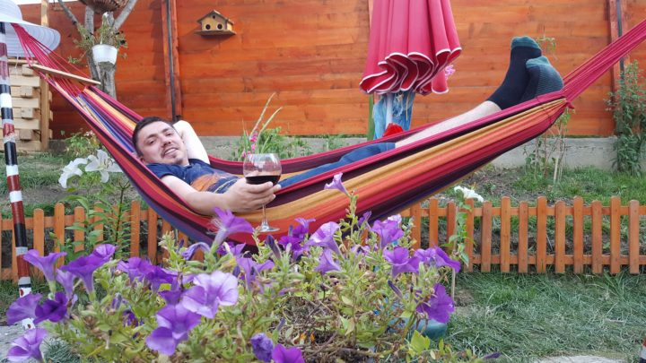

Sunt un programator căruia îi plac sporturile și filmele. Îmi place să călătoresc și să citesc. Acest blog reprezintă hobby-ul meu. Acest blog a luat naștere din dorința de a împărtăși cunoștințe, informații pe care am ajuns să le aflu și gânduri la care reflectez. Temele pe care le abordez sunt legate de literatură, muzică, artă, istorie universală, știință. Pe măsură ce voi publica am să încerc a integra aceste informații în contextul potrivit vieții noastre cotidiene.
Rog cititorul să abordeze cu detașare și discernământ conținutul acestui blog, iar în caz că rezonează îl invit să îl urmărească în continuare.
Adresă de contact: stefan.popoiu@gmail.com